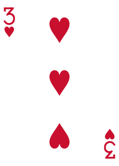
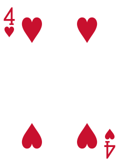
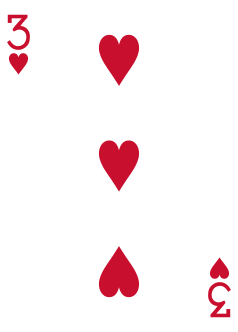
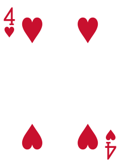
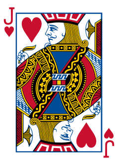
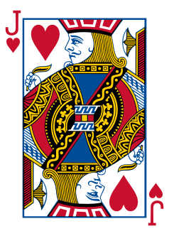

Card counting involves keeping track of a "running count" in your head as you watch the cards come out. The count starts at 0, then changes depending on what cards appear. Cards valued 2-6 count as +1, 7-9 count as 0, and 10, J, Q, K, and A count as -1. The technique is widely used by professional Blackjack players to gain an advantage over the house.
 





 



This game is a tool to practice counting cards. Cards move across the screen, and it is your job to keep the count in your head. At the end of each level, the game will ask you for the count and tell you if you were right or not. The count resets back to 0 after each level.
ExampleSay you start a level. As always, the count starts at 0. The first card is the ace of spades. An ace counts as -1, so now the count is -1. Next, the 3 of hearts and the jack of diamonds shoot across the screen at the same time. The count stays at -1 because the 3 counts as +1 and the jack counts as -1, so they cancel each other out. Before the level ends, you see the cards 2, 8, 7, and 6. The correct count at the end of the level would be 1.